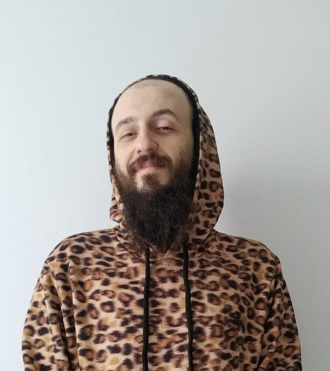

(Ele/Dele)
Me chamo Lucas Michels Zunino, ou 'Zuzu' para os íntimos, tenho 28 anos e sou natural de Florianópolis/SC. Sou músico (Baixista/Vocalista), um grande de um nerd, amo board games, video games, fanboy da músico e as vezes ataco de Barman (sei sim fazer uns bons drinks). Atualmente dou estudante de desenvolvimento de Software pela TRYBE, e estou ansioso por essa nova jornada